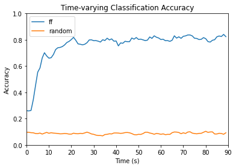

Feedforward Neural Network
Feedforward Neural Network#
import pickle
import time
import numpy as np
import torch
from torch import nn
import torch.optim as optim
from matplotlib import pyplot as plt
import math
from lstm_data_prep import numpy_prep
from eval_model import accuracy, find_lens
device = "cuda" if torch.cuda.is_available() else "cpu"
class FF(nn.Module):
def __init__(self, n_inputs, n_hidden, n_outputs):
super().__init__()
self.in_layer = nn.Linear(n_inputs, n_hidden)
self.out_layer = nn.Linear(n_hidden, n_outputs)
def forward(self, x):
y = torch.tanh(self.in_layer(x))
y = torch.relu(self.out_layer(y))
return y
class Model:
def __init__(self, model, loss_fn, optimizer, n_input, n_hidden, n_out):
self.model = model
self.loss_fn = loss_fn
self.optim = optimizer
self.n_input = n_input
self.n_hidden = n_hidden
self.n_out = n_out
def train(self, train_data, train_labels, test_data, test_labels, n_epochs=500, rand_test=False):
classification_acc = []
rand_acc = []
for time_step in range(train_data.shape[0]):
for layer in self.model.children():
if hasattr(layer, 'reset_parameters'):
layer.reset_parameters()
for i in range(n_epochs):
out = self.model(train_data[time_step])
loss = self.loss_fn(out, train_labels[time_step])
self.optim.zero_grad()
loss.backward()
self.optim.step()
torch.save({"ff": self.model.state_dict(), "ff_optimizer": self.optim.state_dict()}, 'ff-model.pt')
classification_acc.append(self.eval(test_data[time_step], test_labels[time_step]))
if rand_test:
rand_acc.append(self.rand_test(test_data[time_step], test_labels[time_step]))
return classification_acc, rand_acc
def eval(self, data, labels):
check = torch.load("ff-model.pt")
self.model.load_state_dict(check["ff"])
self.optim.load_state_dict(check["ff_optimizer"])
data = data.to(device)
labels = labels.to(device)
out = self.model(data)
loss = self.loss_fn(out, labels)
top_value, top_index = out.topk(1)
final = torch.zeros(data.shape)
for clip in range(data.shape[0]):
final[clip][top_index[clip]] = 1
correct = 0
total = 0
for j in range(out.shape[0]):
if np.count_nonzero(labels[j].cpu().numpy())!= 0:
if self.findIndex(1., labels[j]) == self.findIndex(torch.max(final[j]), final[j]):
correct += 1
total += 1
return correct / total
def findIndex(self, val, arr):
index = -1
for x in range(arr.shape[0]):
if val == arr[x].item():
index = x
break
return index
def random_samples(self, X, num_seq=90, pad=0.):
X_random = []
for i in range(X.shape[0]):
X_batch = np.random.normal(size=X.shape[-1])
#if X_lens[i] < num_seq:
#X_pad = np.array([[pad]*300]*(num_seq - X_lens[i]))
#X_batch = np.append(X_batch, X_pad, axis=0)
X_random.append(X_batch)
X_random = np.array(X_random)
return X_random
def rand_test(self, X, y_test, n_samples=20, percentile=90):
rand_acc_array = []
for sample in range(n_samples):
X_random = torch.from_numpy(self.random_samples(X)).float().to(device)
ff_rand_acc = self.eval(X_random, y_test)
rand_acc_array.append(ff_rand_acc)
plot = np.percentile(np.sort(np.array(rand_acc_array), axis=0), percentile, axis=0)
return plot.squeeze(0)
with open('HCP_movie_watching.pkl','rb') as f:
TS = pickle.load(f)
X_train, y_train, X_t, y_t = numpy_prep(TS, pad = 0.)
X_train = torch.from_numpy(X_train).float().to(device).permute(1, 0, 2)
y_train = torch.from_numpy(y_train).float().to(device).permute(1, 0, 2)
X_test = torch.from_numpy(X_t).float().to(device).permute(1, 0, 2)
y_test = torch.from_numpy(y_t).float().to(device).permute(1, 0, 2)
EPOCHS = 500
n_input = 300
n_hidden = 103
n_output = 15
learning_rate = 1e-3
ff = FF(n_input, n_hidden, n_output).to(device)
loss_fn = nn.CrossEntropyLoss()
optimizer = optim.Adam(ff.parameters(), lr=learning_rate)
model = Model(ff, loss_fn, optimizer, n_input, n_hidden, n_output)
ff_accuracy, rand_acc = model.train(X_train, y_train, X_test, y_test, rand_test=True)
xAx = [i for i in range(0,90)]
plt.plot(xAx, ff_accuracy, label="ff")
plt.plot(xAx, rand_acc, label="random")
plt.xlabel("Time (s)")
plt.ylabel("Accuracy")
plt.ylim(0,1)
plt.xlim(0,90)
plt.title("Time-varying Classification Accuracy")
plt.legend()
plt.show()
